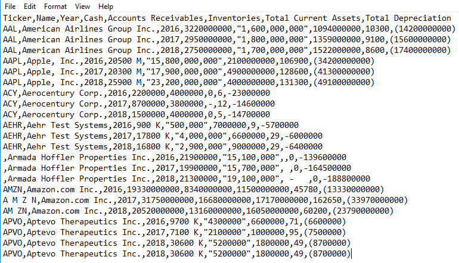

Analytics mindset
ETL
Case 1 – Identifying data problems – Alteryx
To successfully extract, transform and load (ETL) data, you need to be able to identify potential data problems and challenges. The image below contains balance sheet data for several different companies. The image shows a screenshot of the comma-separated file provided to you for this case, which is named Analytics_mindset_case_studies_ETL_Case1.csv.

Required
Complete the ETL overview case, which covers fundamental considerations in the ETL process.
Review the data extract shown above. Identify and document in a memo any issues that might be problematic and would need to be addressed when performing ETL procedures.
* Note: You do not need to verify the validity of the amounts (e.g., American Airlines Group Inc. did in fact report cash of 2750000000 for 2018).
Using the data provided, transform the data using Alteryx and address the issues you identified. Produce an output file in Excel. Submit your Alteryx workflow as a packaged workflow (.yxzp file type [Options > Export Workflow >]) and include your name in the file name.